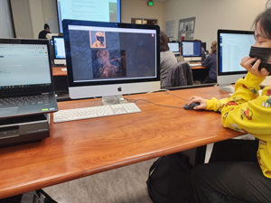
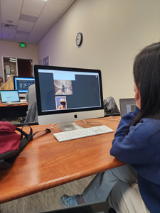
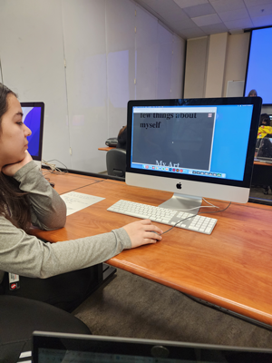

Observations
after user testing, these were the three things I obsered:
- Navigation
In terms of navigating through the page, users seemed to understand, but it could definitelybe improved.
- Layout
Because my code wasnt fully compleated, the layout of my content was not ideal. Some of my testers sugested having some elements stacked, one also mentioned that using a nav bar may work better for my page since i plan to add a scrolling effect.
- Functionality
Like i mentioned, beecause my pade was incompleat some of its funtionality were wonky or not implemented yet. One of my testers mentioned that it would be nice to have a 'scroll to top' button, just to helps users navigate more efficently.
After listening to my classmate's feedback, I think im going to try to incorperate some of their suggestions. My main goal right now it to get my main functions to work, but as soon as i get that down, i plan to add more stylistic elements.
  